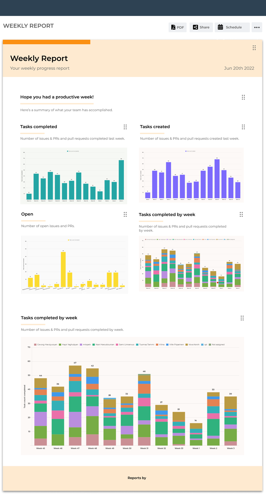
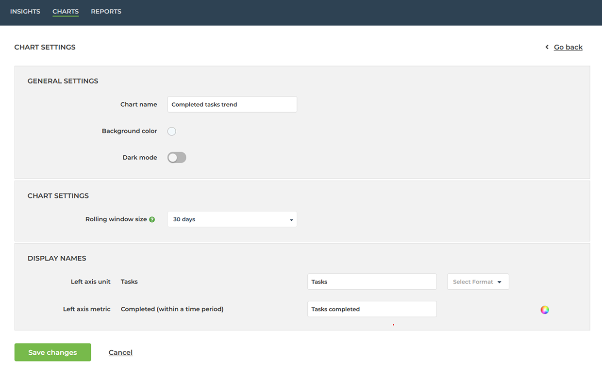
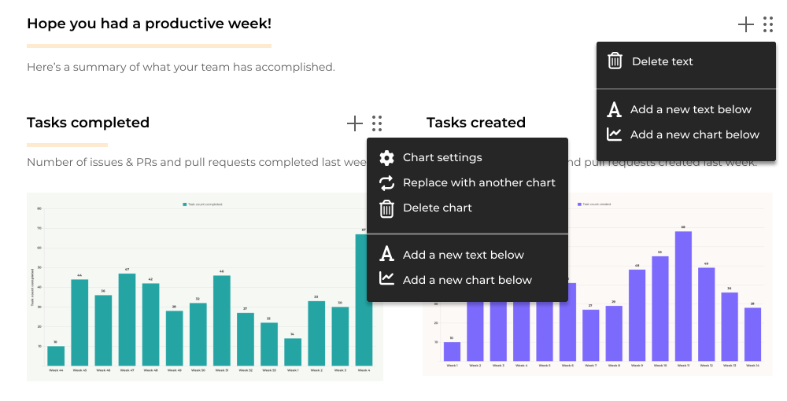

SauceSoft / Screenful · UX design and development
Screenful
Designing and building inline report editing.
Context
Screenful provides business intelligence dashboards and progress reports. I worked on the product through SauceSoft, helping improve how users manage report content.
My role covered UX evaluation, interaction design and frontend implementation. I designed an inline-editing mode and then joined the development team to build it in Vue.js, iterating with Screenful throughout the engagement.

Problem
Editing a report meant leaving the report.
An initial demonstration and usability evaluation exposed a navigation problem. Users could accomplish their tasks, but managing report content required moving through a complex set of subpages.
The design challenge was to bring editing closer to the content, so users could make changes in the context of the report they were preparing.
View the separate chart-settings interface

Process
We presented the evaluation findings to Screenful and explored alternatives together in design workshops. The direction was to reduce unnecessary navigation by letting users manage content directly within the report.
I developed the interface designs and refined them with the client. Once we agreed on the direction, I moved into implementation, continuing to adjust both the designs and the code through weekly feedback meetings.
Solution
Keep the content and the editing together.

Text and chart actions sit beside the content they affect. The report remains visible as the context for editing, rather than becoming a separate destination users must return to.
I implemented the editing mode in Vue.js, learning the framework for the project from a React background. Moving from the designs into the code let me carry the interaction decisions through implementation and respond directly to client feedback.
Impact
From evaluation findings to a working editing mode.
I delivered the inline-editing designs and their Vue implementation as part of the SauceSoft team. The engagement connected evaluation, collaborative design and development within the same project.
Screenful’s client recommendation recognised the team’s work on complex functionality and user experience:
“Implementing complex functionality while retaining a great UX is not an easy task to do, but that’s what SauceSoft guys did.”
Recommendation for the SauceSoft team · SauceSoft